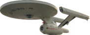
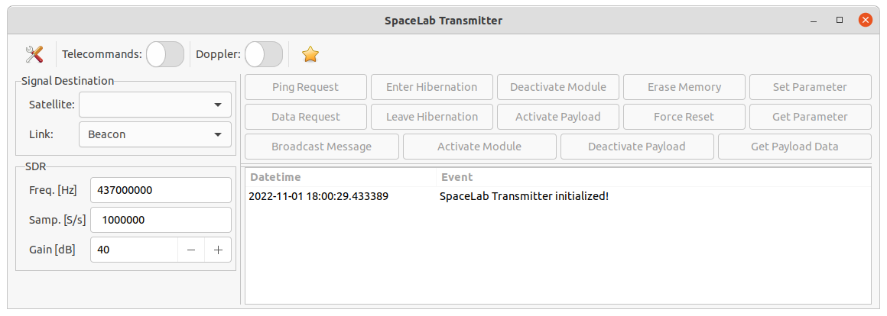

Overview¶
The Spacelab-Transmitter is a Python in-development software to transmit telecommands to satellites using an SDR (Software Defined Radio).
A list of known satellites that are planned to use this software so far are presented below:
The satellites of the list above are developed (or in development) by the same research group: the Space Technology Research Laboratory (SpaceLab) 3, from Universidade Federal de Santa Catarina (Brazil).
The Software¶
{kind=link}
The objective of this software is to become the "universal" software of the Spacelab's Satellites to transmit telecommands to any of its satellites.
As it is first focused on GOLDS-UFSC, right when we run the software we can see 14 buttons with the respective telecommands of this sattelite:
Ping Request
Data Request
Broadcast Message
Enter Hibernation
Leave Hibernation
Activate Module
Deactivate Module
Activate Payload
Deactivate Payload
Erase Memory
Force Reset
Get Payload Data
Set Parameter
Get Parameter
For future satellites, new types of telecommands can be added to this list.
The software also has other functionalities, like doppler correction, wav files generation, a logging system, and so on. More details are described in the next sections of this documentation.
This application is written in Python, and is based on the experience gathered in the applications developed for the FloripaSat-1 mission. For telemetry decoding, there is also another application developed by the same research group, called SpaceLab-Decoder 4.